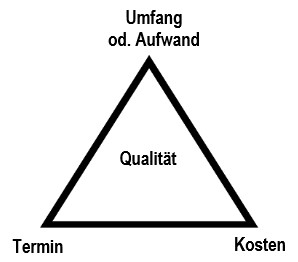

Die
Wellerdick Consulting & Engineering UG
– kurz WCE UG– steht für maßgeschneiderte
Beratungs- und Planungsleistungen im verfahrenstechnischen Anlagenbau.
Mit Sitz in Duisburg begleiten wir Industrie- und Projektpartner durch den gesamten Lebenszyklus komplexer Anlagen – von der ersten verfahrenstechnischen Idee bis zur erfolgreichen Umsetzung.
Unser Fokus liegt auf einer transparenten, zielgerichteten Projektabwicklung und fundierter technischer Expertise.
Unsere Kernkompetenzen liegen in der Technischen Planung & Beratung:
• Projektmanagement & -leitung: Strukturierte Steuerung und zielgerichtete Führung Ihrer Anlagenbauprojekte.
• Sondergebiet Bauherrenvertretung:wird auf Anfrage übernommen.
• Verfahrenstechnik: Konzeptionelle und prozesstechnische Auslegung von Industrieanlagen einschließlich Simulation.
• Apparate- & Maschinen: Spezifische Auslegung und Dimensionierung von Maschinen und verfahrenstechnischen Apparaten.
• Beschaffungsunterstützung: Technische Assistenz und Beratung im Einkaufsprozess von Anlagenkomponenten, PU oder auch Leistungen.
• CAD- & Piping-Beratung: Fachliche Beratung bei der CAD-Bearbeitung, mit speziellem Fokus auf die Rohrleitungs- und Sonderunterstützungsplanung (Piping).
• Sondergebiet Vertrags- Claim-Management: wird auf Anfrage übernommen.
• Baubetreuung:: Fachliche Baubetreuung des kompletten Projekts bis zur Inbetriebnahme und Übergabe.
Ganzheitlicher Blick durch Schnittstellenkompetenz:
Erfolgreicher Anlagenbau lebt von funktionierenden Schnittstellen.
In angrenzenden Technikgebieten bieten wir Ihnen daher eine starke koordinierende und beratende Unterstützung, um alle Gewerke nahtlos zusammenzuführen (ohne eigene Planung):
• EMSR-Technik:(Elektro-, Mess-, Steuerungs- und Regelungstechnik)
• Bau-Technik:Massiv-, Stahl- und Verkehrswegebau
• Statik:Statische Berechnungen, insbesondere für komplexe Rohrleitungssysteme
• HVAC:Heizung, Lüftung und Klimatechnik
• andere Fachgebiete:z.B. Ex- und Brandschutz u.ä.
Projektmanagement
Verfahrenstechnik
Maschinen & Apparate
CAD-Bearbeitung
EMSR-Technik
Montageüberwachung
Inbetriebnahmeüberwachung
Es werden auch folgende Sondergebiete bearbeitet
Claimmanagement
Vertragsmanagement
Moderation von Vertragsstreitigkeiten
Betreute Projekte sind z.B. industrielle und kommunale Abwasserbehandlung, Petro-, Fein- und Spezialitätenchemie sowie Anlagen zur Abluftbehandlung oder Energieerzeugung. Es werden die Planungsphasen Basic- und Detailengineering betreut.
Die WCE UG greift dabei auf mehr als 30 Jahre Erfahrung in den genannten Aufgabengebieten und Projektarten zurück. Die Bearbeitung übernimmt WCE UG selbständig oder mit qualifizierter Unterstützung.
Projektmanagement
Die WCE UG betreut und koordiniert im Rahmen des Projektmanagements / der Projektleitung folgende Fachgebiete
- • Verfahrenstechnik
- • Behördenengineering
- • Maschinen & Apparate
- • Beschaffungsunterstützung
- • Durchführung / Mitwirkung an HAZOP / FMEA
- • Beratung zur CAD-Bearbeitung / Piping
- • Zuarbeit zur EMSR-Technik
- • Zuarbeit zu Stahl-, Massiv- und Verkehrswegebau
- • Zuarbeit zur Statik / Rohrstatik
- • Durchführung / Mitwirkung beim HAZOP
Typische in Abstimmung mit den Fachbereichen erstellte Dokumente sind beispielsweise
- • Projektdefinition
- • Monatsbericht
- • Terminplan
- • Kostenschätzung
- • Kosten- / Beschaffungsplan
- • Protokolle
Nachfolgend ein wenig Theorie zum Projektmanagement:
Projektmanagement ist die Anwendung von bewährten Methoden und erworbenen Kenntnissen unter Nutzung von angepassten Werkzeugen, um die angestrebten Projektziele zu erreichen.
Dabei wird wesentliches Augenmerk auf das Spannungsdreick aus Kosten, Termin und Qualität gelegt.

Es sei klargestellt, dass nur diejenigen Methoden und Werkzeuge Anwendung finden, die sinnvollerweise auf die jeweilige Projektgröße anzuwenden sind. Projektmanagement ist kein Selbstzweck, sondern dient der Projektzielerreichung unter Einsatz angepasster Mittel.
Bei der WCE UG existieren seit 1990 Erfahrungen in der Projektleitung und Projektmanagement von Anlagenbauprojekten zwischen 0,5 und über 50 Mio. Eur TIC.
Beispiele sind unter Ausgeführte Projekte zu finden.
Im Rahmen der nachfolgend genannten Fachdisziplinen erarbeitet die WCE UG in Zusammenarbeit mit dem Auftraggeber die zur Realisierung der Projektziele notwendige Lösung. Notwendig sei in diesem Zusammenhang betont – unter Hinweis auf das unter Projektmanagement angeführte Spannungsdreieck aus Termin, Kosten und Qualität, wird besonderer Wert auf angepasste Lösungen gelegt, die den drei Kriterien gerecht werden.
Verfahrenstechnik
Im Rahmen der Verfahrenstechnik werden beispielsweise folgende typischen Dokumente erarbeitet
- • Massen- und Energiebilanz
- • Grund-, Verfahrens-, R&I-Fließbild(er)
- • Equipmentliste
- • E-Verbraucherliste
- • MSR-Liste
- • Armaturenliste
- • Rohrleitungsliste mit Einstufung nach DGRL
- • Vorgabedokumente für die Auslegung, Berechnung und Spezifikation von Maschinen & Apparaten
- • Funktionsbeschreibung für die SPS-/PLS-Planung
Maschinen & Apparate
Im Rahmen der Aufgabenstellung Maschinen & Apparate werden beispielsweise folgende typischen Dokumente erarbeitet
- • Grundsätzliche Berechnungen
- • Vorschläge für Bauarten oder einzusetzende Werkstoffe
- • Spezifikationen für Maschinen & Apparate
- • Leitzeichnungen für Apparate
- • Anfragetexte für Package-Units oder spezifische Lieferungen und Leistungen
- • Angebotsauswertungen und Vergabeempfehlungen
- • Lieferterminabgleich mit dem Gesamtterminplan
- • Lieferterminverfolgung
- • Dokumentationsprüfung
CAD-Bearbeitung
Im Rahmen der CAD-Bearbeitung werden beispielsweise folgende typischen Dokumente erarbeitet
- • Grund-, Verfahrens-, R&I-Fließbild(er)
- • Detailzeichnungen von Apparaten
- • 3D-Anlagenmodell
- • 3D-Verrohrungsmodell
- • 2D-Zeichnungen aus dem Modell
- • Isometrien
- • 2D-Zeichnungen von Sonderunterstützungen
EMSR-Technik
Im Rahmen der EMSR-Technik arbeitet die WCE UG mit qualifizierten Partnern zusammen.
Montage- / Inbetriebnahmeüberwachung
Im Rahmen der Montage- / Inbetriebnahmeüberwachung werden folgende typischen Leistungen übernommen:
- • Teilnahme an FAT / SAT und Prüfung der Dokumentation
- • Überwachung und -prüfung der Anlagenmontage auf Übereinstimmung mit der Planung
- • Protokollierung von Abweichungen
- • Mitwirkung bei der Abnahme / Testierung der MC
- • Mitwirkung bei der PVI
- • Überwachung und -prüfung der IBN-Ergebnisse auf Übereinstimmung mit den Vorgaben
Claimmanagement
Vertragsmanagement
Moderation von Vertragsstreitigkeiten
Nach mehr als 30 Jahren im Engineering- und Anlagenbaugeschäft sind der WCE UG die Themen Claim- und Vertragsmanagement sowie die Moderation von Vertragsstreitigkeiten durchaus geläufig.
Die WCE UG hat einen umfassenden Erfahrungsschatz bei der Bearbeitung von Claims für beide Seiten, also sowohl die AG- als auch die AN-Seite. Es liegen einschlägige Erfahrungen im Rahmen von Rechtsstreitigkeiten vor.
Die WCE UG erarbeitet, prüft, bewertet gern auch auf Anforderung Werkverträge für die einzelne oder beide Vertragsparteien.
Die WCE UG bietet im Streitfall die Moderation notwendiger Gespräche an und hilft gern eine für die Vertragsparteien gütliche Einigung zu erzielen, bevor ein Gericht bemüht wird. Auch hierzu sind einschlägige Erfahrungen vorhanden.
Aus Gründen der Vermeidung von Interessenkonflikten versteht es sich von selbst, dass WCE UG nur dann die hier genannten Sonderleistungen übernehmen kann, wenn keine andere wirtschaftliche Verbindung besteht oder einen Interessenkonflikt nahelegt.